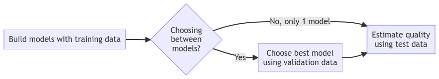
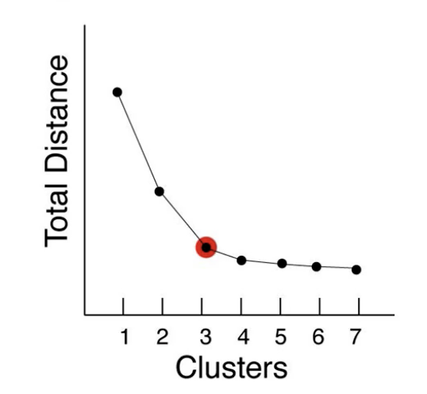
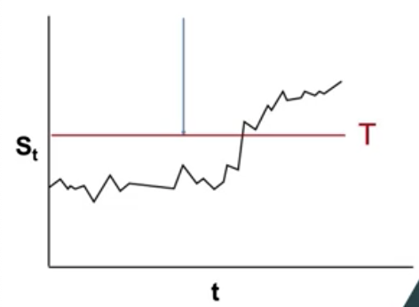
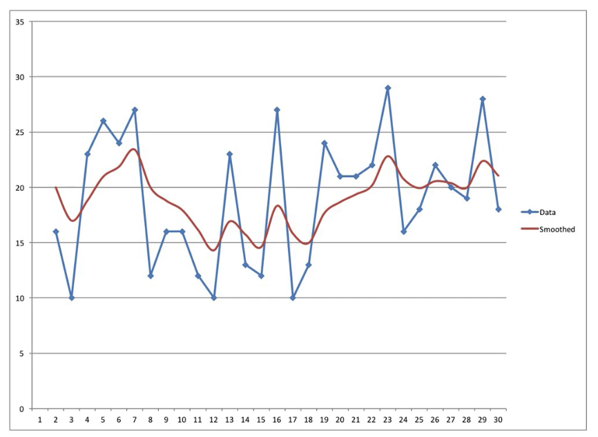
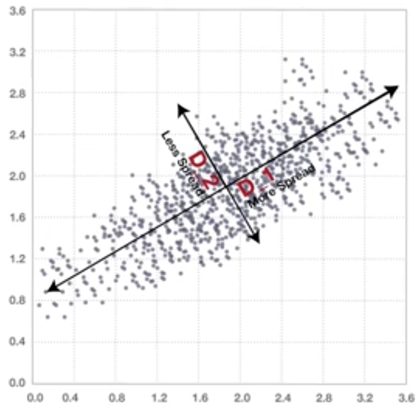
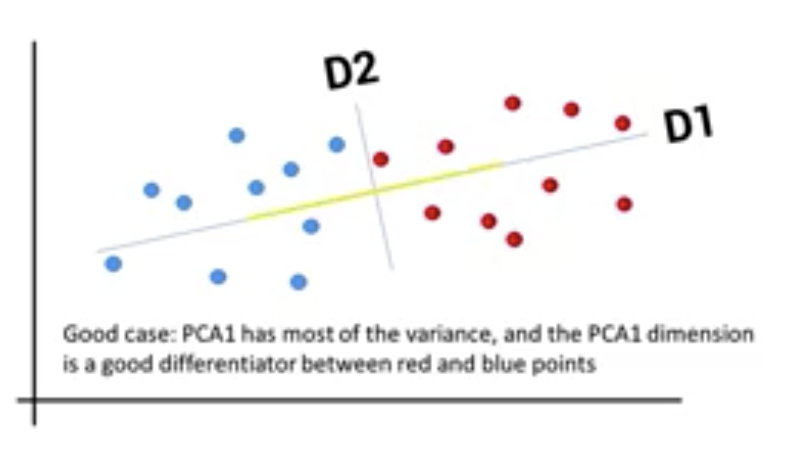
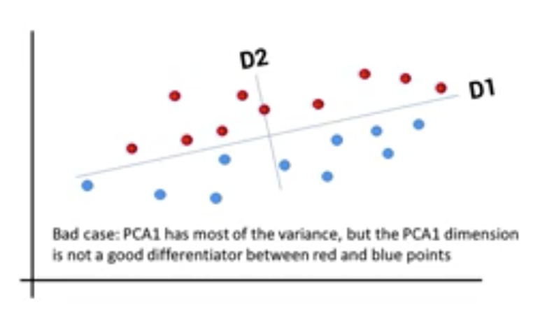
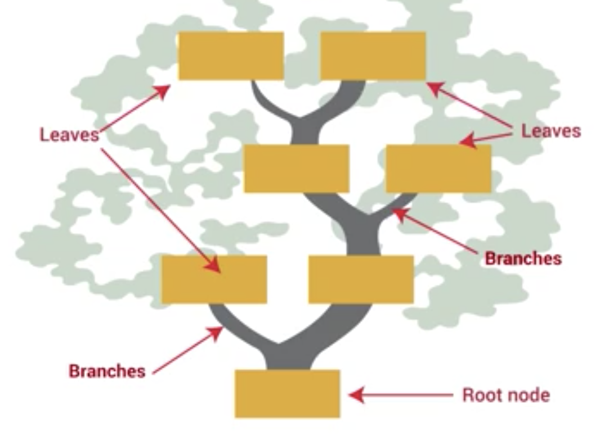
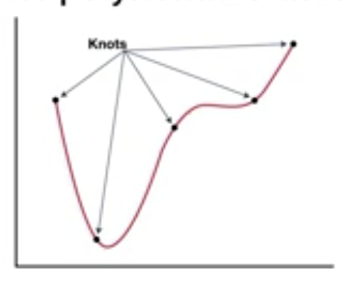

ISYE 6501 Intro to Analytics Modeling Notes
Table of Contents
- 1. Module 01: Intro
- 2. Module 02: Classification
- 3. Module 03: Validation
- 4. Module 04: Clustering
- 5. Module 05: Data preparation
- 6. Module 06: Change detection
- 7. Module 07: Time series
- 8. Module 08: Regression
- 9. Module 09: Advanced Data Preparation
- 10. Module 10: Advanced Regression
1. Module 01: Intro
1.1. What's analytics?
Analytics answers these questions
- Descriptive - what happened
- Predictive - what will happen
- Prescriptive - what action is best
- General questions
1.2. Modeling
- Describe real-life situation with math
- Analyze math
- Turn math answer back to real situation
1.3. Course structure
Enough math intuition and detail
- Models
- Machine learning
- Regression
- Optimizaton
- Cross-cutting
- Data prep
- Output quality
- Missing data
1.4. Three different things are all models
- Real life situation expressed as math
- Analyse the math
- Turn mathematical analyse to real-life solution
1.5. Hence these are all "models":
- Regression
- Regression on size, weight, distance
- Regression estimate = 37+81*Size +76*Wt, etc
2. Module 02: Classification
Definition: putting things into groups
2.1. M1L1: Intro to classification
Types of classification models
- Number of groups
- Number of dimensions
- Can 1 dimension be sufficient to classify?
- Soft vs hard classifiers (is it 100% error-free?)
2.2. M1L2: Choosing a Classifier
Definition of bad classification
- Cost: is one type of mistake worse than the other?
2.2.1. Example: Loan payment (Income vs credit score)
- Plot lines and find one that can separate default vs non-default.
- How do we know the right lines are drawn?
- We want to be as conservative as possible (less error prone)
2.3. M2L3 Data definitions
2.3.1. Data terminology
- Row = data point
- Column = dimension, attribute, feature, predictor, covariate
- Special column = response, outcome
2.3.2. Data types
- Structured data
- Quantitative
- Numbers with meaning
- Categorical
- Numbers without meaning
- Binary data (subset of categorical)
- Unrelated data
- Time series data
- Quantitative
- Unstructured
- Text data
2.4. M2L4: Support vector machines
- Supervised method (algorithm uses known results when training)
- Terminology
- m = number of data points
- n = number of attributes
- xij = j attribute of i data point
- e.g. x51 = credit score of person 5; x52 = income of person 5
- yi = response of data point i
- e.g. 1 if data point is group 1
- -1 if data point is group 2
- Line: \(a_1 x_1\) + \(a_2 x_2\) + … + \(a_n x_n\) + \(a_0\) = 0
- Note the intercept \(a_0\)
- In general: \(\sum_{j=1}^{n} a_j x_j + a_0 = 0\)
- Separation problem: get max distance between lines
- \(2\over{\sqrt(\sum_{j} \left(a_j\right)^2)}\)
- i.e. Mina0 … an: \(\sum_{j=1}^{n}\left(a_j\right)^2\)
- Subject to constraints
2.4.1. When not possible to get full separation
- Then we minimize error
- There's a trade-off between margin and error
- Error for data point is: \[ \text{max} \{ 0, 1-(\sum_{j=1}^{n} a_j x_{ij} + a_0) y_i \} \]
- Total error is: \[ \sum_{i=1}^{m} \text{max} \{ 0, 1 - (\sum_{j=1}^{n} a_j x_{ij} + a_0) y_i \} \]
- Margin denominator: \(\sum_{j=1}^{n}(a_j)^2\)
- We multiply margin by \(\lambda\) to assign its importance of margin vs error.
- Hence, the full equation is: \[ \text{Minimize}_{a_0,...,a_n} \sum_{i=1}^{m} \text{max} \{ 0, 1 - (\sum_{j=1}^{n} a_j x_{ij} + a_0) y_i \} + \lambda \sum_{j=1}^{n}(a_j)^2 \]
2.5. M2L5: What SVM means
- Etymology
- Vector = point
- Support vector = points that holds up (or, supports) a shape. Shape is correctly balanced on parallel lines
- Model determines the "support vectors"
- Automatically from data hence "machine"
- Support can be from top or side
- Looking for max separation i.e. the support vector touches the data points
- Classifier is in between the two support vectors
2.6. M2L6: Advanced SVM
- The constant term a0 can be used to adjust the intercept and hence tweak the SVM model.
- If it's more costly to grant a bad loan, e.g.: \(\frac{2}{3}(a_0-1) + \frac{1}{3}(a_0+1)\)
- For soft classification, you can add a multiplier mj for each type of error:
- mj > 1 for more costly
- mj < 1 for less costly
2.7. M2L7: Scaling and standardization
- Predictive factors may have different orders of magnitude, i.e.
- Income in \(10^5\)
- Credit score in \(10^2\)
- Classifier is \(0 = a_0 + \sum_{j} a_j x_j\)
- Maximise gap by minimizing: \(\sum_{j} a_j^2\)
- Coefficients might be 106 + 5*income + 701*credit score
- Sum of squared coefficients: \(\sum_j a_j^2 = 5^2 + 700^2 = 490,025\)
- Changing credit score by 1 increases the sum by 1,401: \(\sum_j a_j^2 = 5^2 + 701^2 = 491,426\)
- Small change in one coefficient affects the sum a lot due to difference in scales.
- As data has such different scale.
2.7.1. Scaling data
- Common scale is between 0 and 1
- Scale data by factor \[ x_{ij}^{\text{scaled}} = \frac{x_{ij}-x_{\text{min}j}}{x_{\text{max}j} - x_{\text{min}j}} \]
- General scaling between a, b: \[ x_{ij}^{\text{scaled}[b,a]} = x_{ij}^{\text{scaled}[0,1]}(a-b)+b \]
2.7.2. Standardization of data
- Scale to normal distribution
- Common scale is:
- Mean = 0
- SD = 1
- Factor j has:
- mean \(\mu_j = \frac{\sum_{i=1}^n x_{ij}}{n}\)
- SD \(\sigma_j\)
- For each data point \(i\): \[ x_{ij}^{\text{standardized}} = \frac{x_{ij}-\mu_j}{\sigma_j} \]
2.7.3. Choosing between scaling vs standardization
- Scale when:
- Data is in bounded (defined) range, e.g.
- Neural networks
- Optimization models requiring bounded data
- Batting averages (between 0 and 1)
- RGB color scale (0-255)
- SAT scores (200-800)
- Data is in bounded (defined) range, e.g.
- Standardization, examples:
- PCA
- Clustering
- Try both when not clear
- Should be used throughout course even when not stated explicitly
2.8. M2L8: K Nearest Neighbour model (KNN)
- Classification
- e.g. loan dataset with two predictors and a response
- Assume each point has similar characteristics with its neighbors
- Choice of number of points is denoted by \(k\)
- Algorithm to find color (class) of a new point:
- Pick \(k\) closest points (i.e., nearest neighbours) to the new one
- The new point's class is the most common among the \(k\) neighbors
- Complexities
- More than one distance metric (c.f. distance selection topic_).
- Straight line is: \(\sqrt{\sum_{i=1}^n |x_i-y_i|^2}\)
- Attributes can be given more weight if more important, \(w_i\)
- Weights to be found with other techniques e.g. regression
- Unimportant metrics can be removed
- c.f. variable selection topic
- Choose good value of \(k\), c.f. validation @ 3
- More than one distance metric (c.f. distance selection topic_).
3. Module 03: Validation
Check how good a model is
3.1. M3L1: Training, validation and test data
- Cannot calculate accuracy or effectiveness metrics from training dataset
- Since model was trained on it
- This doesn't allow separation of real effects from random effects
- When fitting a model, this captures both real and random effects
- Real effects: exist in all datasets (or subsets)
- Random effects: different in all datasets
- Use a training set of data to fit model
- Use another validation set of data to judge model effectiveness
- When comparing >1 model, use a test dataset.
- e.g. SVM and KNN, with 10 total models, we cannot use the effectiveness metric calculated on the validation set.
- Test data is required as high performing models have above average random effects
- Too optimistic; it might have performed well but also likely received a boost from random effects
- Analogize with models equally good
- Flowchart: 
3.2. M3L2: Splitting data
- How much data goes to each set?
- 70 to 90% train, remaining test
- 50 to 70% train, remaining evenly split validation & test
- Methods of splitting data
- Random
- Rotation (take turn selecting data points into training, test, valid across the sets of split data)
- Advantage: in time series data, may avoid all datasets having early/late data
- Need to ensure rotation doesn't introduce bias
- Combined: 60% of Monday data for training, 60^% of Tuesday data for training, etc.
3.3. M3L3: Cross-validation
What happens with important data appears only in one data set e.g., validation?
- Use cross-validation!
- k-fold cross validation
- Split data for testing (e.g. 20%)
- With remaining data, use it for both training and validation by splitting into 4 x 20%, then:
- Train 1, 2, 3, Validate 4
- Train 1, 2, 4, Validate 3
- Train 1, 3, 4, Validate 2
- Train 2, 3, 4, Validate 1
- Summary of k-fold cross-validation:
- Train model on all other parts
- Evaluate model on remaining part
- Average \(k\) evaluations to estimate the model quality.
- \(10\) is commonly selected for \(k\).
- But, the model selected from cross-validation is not used. Coefficients should also not be averaged.
- Once model is selected, retrain with all data
- Advantages of k-fold cross-validation:
- Better uses data
- Better estimates model quality
- Choose model more effectively
3.4. M3L4: Summary
- Build model with training data
- Pick model with validation data
- Estimate performance with test data
4. Module 04: Clustering
4.1. M4L1: Introduction to clustering
- Unsupervised method (response not available for use in training)
- Grouping data points
- Might help discover attributes in the dataset
- Example of use
- Segmenting market of car buyers by:
- Size
- Price
- Versatility, etc
- Personalized medicine
- Locating facilities
- Image analysis
- Exploratory data analysis (different model for each attribute)
- Segmenting market of car buyers by:
- Example: Miles driven vs. Age
4.2. M4L2: Distance Norms
- Straight line distance (Euclidean) \(\sqrt{(x_1-y_1)^2+(x_2-y_2)^2}\)
- Rectilinear distance (Manhattan, 1-norm) \(|x_1-y_1| + |x_2-y_2|\)
- Generalized p-norm (Minkowski) \(\sqrt[p]{|x_1-y_1|^p+|x_2-y_2|^p}\)
- ∞-norm distance
\(\sqrt[\infty]{\sum_{i=1}^n|x_i-y_i|^{\infty}}\)
- sum = \(|x_i-y_i|^{\infty}\)
- \(\sqrt[\infty]{\text{max}_{i}^n|x_i-y_i|^{\infty}}\)
- Largest term dominates the rest, hence simplifies to:
- \(\text{max}_i |x_i-y_i|\)
- Analogize with warehouse picking robot. The operation that takes the longest dominates the total operation time.
4.3. M4L3: K-Means Clustering
- Unsupervised technique
- Steps to implement K-Means:
- Plot data points on suitable axes (e.g., age vs temperature, sepal width vs sepal height)
- Let:
- \(x_{ij}\) = attribute \(j\) of data point \(i\)
- \(y_{ik}\) = \(1\) iif data point \(i\) in cluster \(k\), else \(0\)
- \(z_{jk}\) = coordinate \(j\) of cluster center \(k\)
- Mathematically, but it takes too long: \[ \text{Min}_{y,z}\sum_i\sum_k \sqrt{\sum_{j} (x_{ij} - z_{jk})^2} \] subject to: \(\sum_k y_{ik} = 1\) for each \(i\)
- Practical method:
- Pick \(k\) cluster centers in data
- Assign each point to nearest cluster center
- Recalculate cluster center (centroid)
- Now, data points might not belong to the right cluster
- Go back to assign, then re-calc, then assign, then re-calc iteratively until stable
- K-Means is a heuristic, i.e.:
- it is fast and good
- not guaranteed to find global best solution.
- It is expectation-maximization (EM), and alternates between expectation (finding cluster centers) and maximization (assigning points to clusters)
4.4. M4L4: Practical details for K-Means
Algorithm just assigns outliers to nearest clusters.
- Choosing starting points:
- Run several times with different initial cluster centers
- Algorithm is non-deterministic, i.e. can produce different results when run with different inputs
- Choose the best solution from the results produced
- Handling outliers:
- Discard, but may not be the 'right' answer
- Ask why the outlier happens
- What it means to discard or include the outlier
- Ultimately, algorithm is just a guide. Best solution is what fits the situation.
- Choosing number of clusters. Is adding a cluster always better?
- It may increase the metric (total distance of each data point to their cluster center), hence clustering appears to work better.
- However, it may defeat the purpose of clustering if every cluster just consists of one data point.
- Total distance can be compared to find the 'kink' or 'elbow'.
- After this point, the marginal benefit of adding another cluster decreases.
Elbow diagram:

4.5. M4L5: Clustering for prediction
Given a new point, which cluster should it be in?
- Is point inside cluster?
- Otherwise, what's the nearest cluster center?
- Asked another way: for the range of the dataset, which areas would we assign to each cluster if a new point appears there?
- This is a Voronoi diagram.
4.6. M4L6: Clustering vs Classification
- Since both group data points…
- The difference is what we know about the data points.
- For classification, the correct response is known, i.e.
- supervised learning
- model uses both attributes and response
- For clustering, the 'correct' classification is unknown
- unsupervised learning
- model decides clusters only based on the attributes
- Supervised learning is more common
5. Module 05: Data preparation
5.1. M5L1: Common techniques and problems
- Scale data
- Outliers?
- Extraneous (unnecessary data)
- Complicates the model and
- Makes it harder to interpret the solution
5.2. M5L2: Outliers
- Types
- Point outliers
- one / few points very different from others
- Contextual outlier
- Value far from other points in time (not in absolute value)
- Collective outlier
- Something missing in a range of points, but not sure exactly where. Outlier by omission.
- How to detect?
- Box-and-whisker plot if data can be plotted in 1-dimension
- Box: 25/75th percentile
- Line: 50th percentile
- Whiskers: 10/90th percentile, 5/95th, etc
- Box: 25/75th percentile
- For multi-dimensional, no good way. We can still:
- Fit a model.
- Points with large error might be outlier
- Box-and-whisker plot if data can be plotted in 1-dimension
5.3. M5L3: What to do with outliers?
- Need to understand why there's outliers
- Bad data
- Sensor fail
- Contaminated experiment
- Wrong data input
- Unexpected, real, data
- Need to understand more about the data, e.g.
- Where it came from
- How it was compiled
- Unique situations
- Bad data
5.3.1. Bad data
- Omit the points
- Use imputation to replace the points
5.3.2. Real / correct data
- Outliers are somewhat expected in large datasets
- E.g., for normally-distributed data:
- 4% will be outside 2 σ
- 1e6 data points = 2000 outside 3 σ
- Removing real outliers might make model too optimistic. e.g. not account for actual shipments that take a long time from US to Africa
- Outliers might be due to weather, political events
5.3.3. Another way to handle outliers
- First build a logistic regression model
- This estimated probability of outliers under different conditions
- Next, build the regular model i.e. estimate delivery time under normal conditions
- Use data without outliers
- Report different outcomes…
5.3.4. Summary
- Outliers aren't predictable
- Investigate the data in case you're wrong
6. Module 06: Change detection
6.1. M6L1: Examples
- Usually with time series data
- Determine if action is needed, e.g.,
- Time for machine maintenance?
- Have sales increased?
- Determine impact of some past action, e.g.,
- Did new tax / increase rate decrease sales?
- Did price discount increase sales?
- Determine changes of current actions, e.g.
- Did voting patterns change?
6.2. M6L2: Cumulative sum for change detection
Answers whether mean of the observed distribution gone above a critical level
- xt is observed value at time \(t\)
- μ is mean of \(x\), if no change in distribution
- Hence, \((x_t - \mu)\) is how much the observation is above mean at time \(t\)
- Detecting an increase
\[
S_t = \text{max}\{ 0, s_{t-1}+(x_t-\mu-C) \}
\]
- Determine threshold \(T\) and ask whether St ⩾ T?
- If running total < 0, it's irrelevant
- There should still be some randomness
- C is a term to control how faster St increases
- Determine threshold \(T\) and ask whether St ⩾ T?
- Detecting a decrease
\[
S_t = \text{max}\{ 0, s_{t-1}+(\mu-x_t-C) \}
\]
- Is St ⩾ T?
6.2.1. Interpretation
- Choices of model parameters
- T
- the threshold, above which alarm is raised
- C
- the control term (smaller = more sensitive)
- Consider / trade off:
- How costly is it to delay detection? (false negative) -> if it's costly, use small C
- How costly is false positive? -> if it's costly, use big C
- Use a control chart and plot St vs t with \(T\) as a horizontal line 
6.3. M6L3: Ethics: Honestly reporting our results
- Be faithful to data
- Have sound conclusions drawn from the model and not your own conceptions
- Always be honest and true to your analysis
7. Module 07: Time series
7.1. M7L1: Introduction to exponential smoothing
- Data for the same response is known for many time periods
- Examples:
- Temperature readings
- Price of stocks
- Daily sales of hamburgers
- Blood pressure readings
- Variation in time series data:
- Trends increase or decrease
- Cyclical variables over a year or a week
7.1.1. Random variation
- No underlying reason for the variation
7.1.2. Definitions:
- \(S_t\): expected baseline response at time period \(t\)
- \(x_t\): the observed response at \(t\)
- Seeing a increase over time, is it
- A real increase?
- Random?
- There are two ways to answer:
- It's a real increase, hence \(S_t = x_t\)
- the observed reading is real indicator of revised baseline
- It's random, hence \(S_t = S_{t-1}\)
- today's baseline = yesterday's baseline
- It's a real increase, hence \(S_t = x_t\)
7.1.3. Exponential smoothing method
Combines both, i.e. \(S_t = \alpha x_t + (1-\alpha)S_{t-1}\)
0 < α <1
α example value of α randomness trust small → 0 (e.g. 0.01) high previous baseline i.e. \(S_{t-1}\) large → 1 (e.g. 0.99) low today's estimate i.e. \(x_t\) - How to start? \(S_1 = x_1\)
7.2. M7L2: Trend and cyclic effects
Complexities!
- Trends, increasing or decreasing
- Cyclical patterns, e.g. annual, weekly, daily
7.2.1. Trends
- \(T_t\): the trend at time period \(t\)
- \(S_t = \alpha x_t + (1-\alpha)(S_{t-1}+T_{t-1})\)
- \(T_t = \beta(S_t - S_{t-1}) + (1-\beta)T_{t-1}\)
- Initial condition: \(T_1=0\)
7.2.2. Cyclical patterns
- Make cycles additive: behaves like trend
- Make cycles multiplicative: more notation required
- L = length of cycle
- \(C_t\) = the multiplicative seasonality factor
- This inflates or deflates the observation
- New baseline formula \[ S_t = \frac{\alpha x_t}{C_{t-L}} + (1-\alpha)(S_{t-1}+T_{t-1}) \]
- Need to use the factor from \(L\) time periods ago
- as that's the most recent cyclic factor we have from that part of the cycle
- Update the cyclic factor in a similar way i.e.:
- \(C_t = \gamma(x_t/S_t) + (1-\gamma)(C_{t-L})\)
- C1, …, CL = 1
- meaning there's no initial cyclic effect
- If C = 1.1 on Sunday:
- sales are higher by 10% just because it's Sunday
- Initial values: first \(L\) are set to 1. Multiplying by 1 = no effect
7.2.3. Summary
- Exponential smoothing
- Single
- Double (with trend)
- Triple (with trend and cyclic effects)
- AKA Winter's method, or Holt-Winters
7.3. M7L3: Etymology (what the name means)
Example equation when \(\alpha = \frac{1}{2}\): \(S_t = 0.5 x_t + 0.5 S_{t-1}\)
- Smoothing
- Note: when xt is high, St is not as high, as \((1-\alpha)S_{t-1}\) pulls it down
- Conversely: when xt is low, St is not as low, as \((1-\alpha)S_{t-1}\) pulls it up
- Peaks and valleys are smoothed out 
- Exponential
- Each \(S_{t-1}\) actually contains every previous value of x!
- When written or expanded out, e.g. \[ S_t = \alpha x_t + (1-\alpha)S_{t-1} \] \[ S_{t} = \alpha x_t + (1-\alpha)[\alpha x_{t-1} + (1-\alpha)S_{t-2}] \] \[ S_{t} = \alpha x_t + (1-\alpha)\alpha x_{t-1} + (1-\alpha)^2S_{t-2} \]
- Each St is weighed by (1-α) to an increasing exponent
- This means not only the current observation matters; instead, every past observation contributes to the current baseline estimate
- However, more recent observations are more important as they have higher weight
- Each \(S_{t-1}\) actually contains every previous value of x!
7.3.1. Summary
- Exponential smoothing smooths out jumps in observed data
- It's an exponential weighting of all past observations
- More recent observations are more important to the current baseline estimate
7.4. M7L4: Forecasting
- Recap: \(S_t = \alpha x_t + (1-\alpha)S_{t-1}\)
- Prediction:
- \(S_{t+1} = \alpha x_{t+1} + (1-\alpha)S_{t}\)
- However xt+1 is unknown
- Best guess for xt+1 is \(S_t\)
- Our forecast for \(t+1\) is hence (after substituting):
\[
F_{t+1}=\alpha S_t + (1-\alpha) S_t \\
F_{t+1} = S_t \\
F_{t+k} = S_t \text{when } k=1, 2, ...
\]
- note that forecast error becomes larger for larger \(k\)
- If including trend:
\[
S_t = \alpha x_t + (1-\alpha)(S_{t-1}+T_{t-1}) \\
T_t = \beta (S_t-S_{t-1})+(1-\beta)T_{t-1} \\
F_{t+1} = S_t + T_t \\
F_{t+k} = S_t + kT_t, k=1,2,...
\]
- Best estimate of next baseline
- the most current baseline estimate
- Best estimate of the trend
- the most current trend estimate
- If including multiplicative seasonality:
\[
S_t = \alpha x_t/C_{t-L} + (1-\alpha)(S_{t-1}+T_{t-1})
F_{t+1} = (S_t+T_t)C_{(t+1)-L}
\]
- Best estimate of next time period seasonal factor
- the corresponding (lagged) seasonal factor, i.e. \(C_{t+1}=C_{t+1-L}\)
- Finding the right α, β, γ: use optimization, to be covered in future
- \(\min{(F_t-x_t)^2}\)
7.5. M3L5: ARIMA
AutoRegressive Integrated Moving Average.
- ARIMA theory is not covered in IAM.
7.5.1. (I): Differences
- Exponential smoothing assumes stationary data, i.e.
- mean, variance, other measures are constant over time
- ARIMA works for data that's not stationary
- if differences in data are stationary
- 1st order difference D(1)
- difference of consecutive observations, i.e. \(D_{(1)t}=(x_t-x_{t-1})\)
- 2nd order difference D(2)
- difference of the differences i.e. \(D_{(2)t}=(x_t-x_{t-1})-(x_{t-1}-x_{t-2})\)
- dth order difference D(d)
- diff… d times
- if differences in data are stationary
7.5.2. (II): Autogression
- Predicting current values based on previous period's values
- Regression: predicting value based on other factors
- Auto: use earlier values to predict. Only works with time series
- When used to forecast, exponential smoothing is an order-∞ autoregressive model
- All previous values are used to make current prediction
- Order-p autoregressive model: St is function of \(\{x_t, x_{t-1}, ..., x_{t-(p-1)}\}\)
- Only go back \(p\) periods
- ARIMA: combines autoregression and differencing
- Autoregression on the differences
- Use \(p\) time periods of previous observations to predict \(d^{th}\) order differences
7.5.3. (III): Moving Average
- Use previous errors εt as predictors
- \(\epsilon_t = (\hat{x_t}-x_t)\)
- Order-q moving average
- go back \(q\) time periods
- \(\epsilon_{t-1}, \epsilon_{t-2}, ..., \epsilon_{t-q}\)
7.5.4. ARIMA model
ARIMA (p,d,q) model
- \(d^{th}\) order differences
- \(p^{th}\) order autoregression
- \(q^{th}\) order moving average
- Equation: \[ D_{(d)t} = \mu + \sum^p_{i=1}\alpha_i D_{(d)t-i} - \sum^q_{i=1} \theta_i (\hat{x}_{t-i}-x_{t-i}) \]
- Software can find \(d, p, q\)
- Extensions
- Add seasonality (out of scope for IAM)
- Specific models:
- ARIMA(0,0,0)
- white noise
- ARIMA(0,1,0)
- random walk
- ARIMA(p,0,0)
- AR (autoregressive) model
- ARIMA(0,0,q)
- MA (moving avg) model
- ARIMA(0,1,1)
- basic exponential smoothing model
- Can be used for short-term forecasting
- ARIMA is better than ES when data is more stable with fewer peaks, valleys, outliers
- ARIMA needs 40+ historical data points to work well
7.6. M7L6: GARCH
- GARCH
- Generalized Autoregressive Conditional Heteroskedasticity
To estimate or forecast the variance
7.6.1. Variance
- Estimates the amount of error
- E.g. forecasting demand for trucks
- tell you how much forecast might be higher/lower than the actual value you see (later) to plan accordingly
- In investment (portfolio optimization):
- Balance the expected return in investment with amount of volatility.
- Riskier
- higher expected return
- Less risky
- lower expected return
- Variance is a proxy for amount of volatility or risk
- Balance the expected return in investment with amount of volatility.
7.6.2. GARCH
\[ \sigma^2_t = \omega + \sum^p_{i=1}\beta_i\sigma^2_{t-1}+\sum^q_{i=1} \gamma_i \epsilon^2_{t-i} \] It looks very similar to ARIMA Equation, but: Differences:
- GARCH deals with variances and squared errors
- ARIMA deals with observations and linear errors
- GARCH deals with raw variances
- ARIMA deals with differences of variances
7.6.3. Summary - three models for time series analysis
- Exponential smoothing
- ARIMA, a generalization of exponential smoothing
- GARCH, an ARIMA-like model for analyzing variance
8. Module 08: Regression
8.1. M8L1: Intro to Regression
8.1.1. What questions can regression answer?
- How do systems work? (descriptive)
- What will happen in the future? (predictive)
8.1.2. Simple linear regression
- Linear regression with one predictor, e.g. \(y = a_0 + a_1x+1\)
- Date point \(i\)'s prediction error \(= y_i - \hat{y}_i -(a_0+a_1x_1)\)
- Sum of squared errors \(=\sum^n_{i=1}(y_i - \hat{y}_i)^2\) \(=\sum^n_{i=1}(y_i-(a_0+a_1x_1))^2\)
- Best fit regression line
- Minimizes sum of squared errors
- Defined by a0 and a1
- Underlying math
- Minimize convex quadratic function
- Set partial derivatives to 0
- Solve simultaneous equations
8.2. M8L2: Maximum Likelihood and Information Criteria
8.2.1. Likelihood
- Measure the probability density of a parameter set
- the parameters that give the highest probability
- Assuming:
- Errors are normally distributed with mean 0, variance σ2, independently and identically distributed
- Observations are z1 to zn
- Model estimates are y1 to yn
- Probability density of observing zi if true value yi is \[ \frac{1}{\sigma\sqrt(2\pi)}e^-\frac{(z_u-y_i)^2}{2\sigma^2} \]
- Joint density over \(n\) terms \[ \prod^n_{i=1}\frac{1}{\sigma\sqrt(2\pi)}e^-\frac{(z_u-y_i)^2}{2\sigma^2} \\ = (\frac{1}{\sigma\sqrt{2\pi}})^n e^-\frac{1}{2\sigma^2}\sum^n_{i=1}(z_i-y_i)^2 \]
- Hence to minimize \(\sum^n_{i=1}(z_i-y_i)^2\) over a0, …, am: equals to minimizing \(\sum^n_{i=1}(z_i-(a_0 + \sum^m_{j=1}a_jx_{ij}))^2\)
8.2.2. Maximum likelihood fitting
- Simplest example is regression with i.i.d. errors
- Complex examples:
- Different estimation formulas
- Different error assumptions
- Good software can handle complex cases
8.2.3. Akaike Information Criterion
- L*
- maximum likelihood value
- \(k\)
- number of parameters being estimated
- AIC
- \(2k-2\log(L^{*})\)
- Penalty term
- balances likelihood with simplicity, helps avoid overfitting
8.2.4. Corrected AIC (AICc)
Use for smaller datasets. \[ AIC_c = AIC + \frac{2k(k+1)}{n-k-1} \\ = 2k-2\log(L^{*})+\frac{2k(k+1)}{n-k-1} \]
8.2.5. AICc example
- Model 1: AIC 75; Model 2: AIC 80
- Relative likelihood equals: \[ e^\frac{AIC_1-AIC_2}{2} \\ = 8.2% \]
- Hence, Model 2 (larger AIC) is 8.2% as likely as Model 1 to be better
- Model 1 is probably better
8.2.6. Bayesian Information Criterion
- BIC: \[ k\log(n)-2\log(L^{*}) \]
- Similar to AIC, but
- bigger penalty term than AIC's penalty term
- encourages models with fewer parameters
- Use BIC when there are more data points than parameters
Rule of thumb for |BIC1 - BIC2|
value interpretation for smaller BIC model >10 very likely better 6-10 likely better 2-6 somewhat likely better 0-2 slightly likely better
8.2.7. Summary
- No definite rules for AIC, BIC, maximum likelihood
- Can look at all 3 to decide what's best
8.3. M8L3: Using Regression
8.3.1. Regression coefficients
- a0, a1, …, am for the equation:
- \(y=a_0+a_1x_1+...+a_mx_m\)
- Example for baseball, descriptive question:
- How many runs is associated with every homerun
- Response: how many runs are scored by a team
- Predictors:
- Number of HR
- Triples
- Doubles
- Singles
- Outs
- Double Plays
- Stolen bases, etc
- Equation: \[ \text{Runs scored} = a_0 + a_1\text{Number of HR} + a_2\text{Number of triples} + ... + a_7\text{Number of stolen bases} \]
- a1 = 1.4
- Means that every HR adds 1.4 runs scored on average, ceteris paribus
- Example: height, predictive question:
- How tall will a 2-year old be as an adult?
- Response: a person's adult height
- Predictors:
- Father's height
- Mother's height
- Height at age 2
- Male, female
- Equation: \[ \text{Adult height} = a_0 + a_1\text{Father's height} + a_2 \text{Mother's height} + ... + a_4\text{Male or female} \]
8.4. M8L4: Causation vs Correlation
- Causation
- one thing causes another thing
- Correlation
- two things tend to happen / not happen together, but neither one causes the other
8.4.1. Example: winter recreation
- y: hours per day spent outdoors in winter
- x1: city's average daily winter temperature
- Equation: \(y=a_0+a_1x_1\)
- Correlation between y and x1
- with low p-value of a1
- Does higher temperature in winter cause people to go outside?
- Probably
- Reversing the equation:
- y: hours per day spent outdoors in winter
- x1: city's average daily winter temperature
- Equation: \(x_1 = b_0 + b_1y\)
- Same correlation between y, x1
- Same p-value of b1 and a1
- Hence, does spending more time outside cause higher winter temperatures?
- No
8.4.2. Example: tiredness vs scruffiness
- Neither one caused another, they're just related to a common tired factor, kids
8.4.3. How to tell causation?
- When is there causation?
- Cause before effect
- Idea of causation makes sense
- No outside factors can cause the relationship (hard to ensure this - need to consider all other factors)
- Be careful before claiming causation
8.4.4. Meaningless correlations
- Per capita consumption of mozzarella with number of civil engineering doctorates awarded
- link
8.5. M8L5: Transformations and Interactions
- Recall: \(y=a_0+a_1x_1+...+a_mx_m\)
- What if the fit isn't linear for x?
- Answer: transforming the data!
8.5.1. Transforming the data
- Quadratic regression, e.g. \[ y = a_0 + a_1 x_1 + a_2 x_1^2 \]
- Trigonometric: \[ y = a_0 + a_2 \sin(x^2) \]
- Response transform: \[ \log(y) = a_0 + a_1 x_1 + ... + a_m x_m \]
- etc.
- Box-Cox transforms can be automated
8.5.2. Interaction terms, e.g. product of inputs
- Child's heights might be influenced by product of father and mother's heights (\(x_1x_2\))
- \(y = a_0 + a_1 x_1 + a_2 x_2 + a_3 (x_1 x_2)\)
- Treat x1 x2 as new input, x3
- Then find best fit coefficients in the last module
8.6. M6L6: Output
8.6.1. p-Values
- Estimates the probability that coefficient is actually 0
- A hypothesis test
- If p-value is big (>0.05), the coefficient is likely 0, hence remove its attribute from the model
- Other thresholds
Threshold Number of factors included Risk Higher (>0.05) More factors included Irrelevant factors included Lower (<0.05) Less factors included Relevant factors left out - Warnings
- With lots of data:
- p-values can get small and seem significant even when attributes aren't related to response
- Even when meaningful, p-values only represent probabilities
- With 100 attributes having p-value 0.02:
- Each of them have 2% chance of not being significant
- Hence on average 2/100 are actually irrelevant
- With lots of data:
8.6.2. Confidence interval
- Mostly given at 95% level around the coefficient
- Range of where the coefficient probably lies
- And how close that is to zero
- Related to p-value
8.6.3. T-statistic
- \(\frac{\text{Coefficient}}{\text{Std error}}\)
- Related to p-value
8.6.4. Coefficient itself
- If very small, then when multiplied by attribute, it's likely irrelevant
9. Module 09: Advanced Data Preparation
9.1. M9L1: Box-Cox Transformations
- Models may require data to be normally distributed
- What happens when this assumption isn't valid in the data?
- Results will have bias in this case
- Data exhibits heteroskedasicity
- i.e., variances are not i.i.d.
- Another example is time series data, where later values have higher variance
- Box-Cox is a logarithmic transformation that:
- Stretches smaller range to increase variability
- Shrinks larger range to reduce variability
- E.g. \(t(y)=\frac{y^\lambda-a}{\lambda}\)
- t(y) can become close to normally distributed
- Need to remember to check for normality (e.g., with Normal Q-Q plot)
9.2. M9L2: Detrending
- For time series data with trends, i.e. an increase or decrease over time
- For example: increase in price of gold over time but need to account for inflation over time (value of $ decreases over time)
- The trend if not correct can mess up a factor-based analysis
- Can detrend:
- Response
- Predictors
- Factor-based model (consider whenever using these models)
- Regression, SVM, etc.
- How to detrend:
- Factor by factor for one-dimensional regression, y=a0+a1x
- Simple, works well to remove trend for factor-based analysis
- This requires going factor by factor and fitting a linear regression model on it
- E.g. for simple linear regression for gold prices:
- Price = - 45600 + 23.2xYear
- Detrend end price = Actual price -(-45600+23.2+year)
- This produces a similar graph to the inflation-adjusted rate
- Useful when we don’t know the response (as in most cases)
- Factor by factor for one-dimensional regression, y=a0+a1x
9.3. M9L3: Intro to PCA
- Works on high dimensional and correlated data
- Which subset of features are important to predict response?
- e.g. which stocks can predict how well the market performs the next day?
- 6K securities
- Remove days that have major events
- Issues:
- 6K predictors need many many data points to avoid overfitting (need to reduce predictors)
- However, even with unlimited data, the underlying situation could have changed over time
- E.g. TSLA stock is good predictor now but it was only listed 5 years ago
- High correlation between predictors
- 6K predictors need many many data points to avoid overfitting (need to reduce predictors)
- PCA transforms data by:
- Removing correlations within predictors
- Ranking coordinates by importance
- Most important are first
- By concentrating on first n principal components
- This reduces random effects and
- These PCs have higher signal to noise ratio
- Graphically:
- rotate plot until it’s orthogonal to the correlation
- If D1 and D2 are the new PCs,
- D1 (that explains more variance) will be the first factor
9.4. M9L4: Using PCA
9.4.1. Math of PCA
- Definitions
- \(X\)
- initial matrix of data
- \(x_{ij}\)
- jth factor of ith data point
- Scale to:
- \(\frac{1}{m}\sum_i x_{ij} = \mu_j = 0\)
- To find all eigenvectors of XT X, where:
- V
- Matrix of eigenvectors, sorted by eigenvalue
- V
- [V1 V2 … ]
- Vj
- jth eigenvector of XT X
- PCA is a linear combination:
- 1st component is XV1, then 2nd is XV2, …
- kth new factor for ith data point: \[ t_{ik} = \sum^m_{ik} x_{ij}v_{jk} \]
- tik is the factor after PCA
9.4.2. PCA as linear combination
- It removes correlation between factors
- In order to have fewer variables/factors in the model:
- Choose to include only first n principal components
- PCA can also deal with non-linear functions, using kernels. This is similar to SVM modeling
9.4.3. PCA for regression
- How to interpret the new model in terms of original factors?
- Example: PCA finds \(L\) new factors (each \(t_{ik}\)), and regression coefficients b0, b1, … bL: \[ y_i = b_0 + \sum^L_{k=1}b_k t_{ik} \\ = b_0 + \sum^L_{k=1}b_k [\sum^m_{j=1} x_{ij} v{jk}] \\ = b_0 + \sum^m_{j=1}x_{ij} [\sum^L_{k=1}b_kv_{jk}] \\ = b_0 + \sum^m_{j=1}x_{ij}[a_j] \]
- Each t vector does not have nice intuitive explanations as they are linear combinations of original factors.
- Hence just plug in the transformation for each t factor: \[ a_j = \sum^L_{k=1}b_kv_{jk} \]
9.4.4. Summary of PCA
- Use PCA for high-dimensional and correlated data
- PCA removes these correlations and ranks coordinates by importance (i.e., variability explained)
- PC1 > PC2 > PC3, etc
- PCA can be transformed back to the original factor space to get intuitive explanations
- PCA allows use of fewer variables
- Pick the ones that explain the most variability
9.5. M9L5: Eigenvalues and Eigenvectors
9.5.1. Initial example
- Definitions:
- \(A\)
- a square matrix
- \(v\)
- a vector such that \(Av=\lambda v\)
- \(V\)
- eigenvector of \(A\)
- \(\lambda\)
- eigenvalue of \(A\), i.e. det(A-λ I) = 0. Every λ is eigenvalue of A
- Given λ, solve \(Av=\lambda v\) to find the eigenvector \(v\)
9.5.2. Important: know how eigenvalues and eigenvectors are important to PCA
- With a scaled matrix \(X\) of data, and xij is factor value for ith data point after scaling,
- Find eigenvectors v1 … vn of \((X^TX)\)
- Then, find the principal components:
- Multiply \(X\) by the eigenvectors
- \(Xv_1, Xv_2, ..., Xv_n\) are the principal components
- i.e. the transformed set of orthogonal coordinate directions
9.6. M9L6: PCA: The good and the bad
- Summary 
- D1 has more explanatory power (vaariation)
- But it may not be the most helpful for explanatory/predictive modeling
- PCA depends only on the independent variables, not the response variable
- It's possible response is affected by variables with low variability instead of those with high variability!
9.6.1. Example where PCA is good
- Assume PCA is used for classification
- PC1 has most of the variance and PC1 can classify red and blue points 
9.6.2. Example where PCA is bad
- PC1, though it has more variance, cannot classify the red and blue points
- PC2 has less variance but it can classify the points exactly 
9.6.3. Summary
- We still use PCA (or try to!) as dimensions have higher variation specifically because they contain more information
- However, this is not always true
- PCA is a helpful approach to try
10. Module 10: Advanced Regression
Midterm 1 covers up to Module 10
10.1. M10L01: Introduction to CART
Classification and Regression Trees
10.1.2. Recall
In simple linear regression, e.g.: impact of marketing email on recipient spending.
- Predictors:
- Demographics e.g. age, sex, number of children, income
- Purchasing factors e.g. amount spent per month
- Binary factor e.g. was email received and opened
10.1.3. What if responses can be differentiated by a factor?
(The above example of simple linear regression assumes every data point behaves the same way) If each group instead have their own characteristics and responses, two regressions can thus be fitted, e.g.:
- 25 years or younger \(\text{Money spent}=50+13.75\times\text{Number of Children}+0\times\text{Income over 30,000}+\text{...}\)
- older than 25 \(\text{Money spent}=32+28.13\times\text{Number of children}+7.13\times\text{Income over 30,000}+\text{...}\)
10.1.4. Further splits are possible
- Each branch is further split
- Each ending is a "leaf"
- Descriptively: Each leaf's coefficients explains behaviour in that leaf
- Predictively: Each leaf's regression model can be used to predict a new point in that branch.
- Each branch can run \(R^2\) and those with low \(R^2\) can be investigated/improved.
10.1.5. Disadvantages
- Lots of computations and regressions
- Fewer and fewer data points in each node
10.1.6. Other places to use trees
- The branching concept can be applied to:
- Logistic regression model
- fraction of node's data points with True response
- Classification model
- Most common classification among node's data points
- Decision model
- Each leaf is the decision "do I send a marketing email?"
- Logistic regression model
10.1.7. Common questions
- How to choose the branches?
- When to stop branching?
- Why is this called a regression tree?
10.1.8. Etymology of "tree"

10.2. M10L02: Branching
10.2.1. Main questions
- Which factors are used to decide on branching?
- How to split data?
In practice, no good algorithm to help decide. Instead, branch on 1 factor at a time.
10.2.2. Branching methods
- Start with half of data and run a regression
- Split the data into 2 halves based on some factor we can branch from (e.g. age >25)
- For each leaf:
- Calculate variance of response amongst all data points in each leaf
- Test splitting on each factor to see how much lower total variance of two branches would be vs. the least variance.
- Choose the factor with lowest total variance.
- Make split iif:
- Enough data points in each branch
- Decrease is lower than threshold δ
- Otherwise, don't split the leaf
- Go backwards to prune using the 2nd half of data not used in initial branching. For each pair of leaves created in each branch:
- Use the other half of data in each branch to see if estimation error was improved by branching
- If error increases/no change, then remove branch
- Else, keep the branch
- Use the other half of data in each branch to see if estimation error was improved by branching
10.2.3. Generic branching concept
Overfitting can be costly; make sure the benefit of each branch is greater than its cost
Key ideas
- Use a metric related to model quality
- Find 'best factor' to branch with
- Check: did this improve the model?
- If not, prune the branch back.
Rejecting potential branches
- Low improvement benefit
- Some side of branch has too few data points after branching
- Each leaf should contain ≥5% of original data (we don't want to over-fit the model)
10.3. M10L03: Random Forests
10.3.1. Intro summary
- Introduce randomness
- Generate lots of random trees
- Each has its strengths and weaknesses
- Key concept: average better than single tree
10.3.2. Introducing randomness
via bootstrapping
- With \(n\) number of original data points, we make trees each with \(n\) points.
- However, some points can be picked multiple times while others get picked 0 times.
- When branching:
- Not as before (before: we choose 1 factor at a time)
- In RF: pick a small number of factors \(X\)
- Choose the best factor in that set to branch on
- Common number of factors used: \(1+\log(n)\)
- No need to prune tree
10.3.3. Note
- Each tree has slightly different data
- Will end up with lots of different trees (500-1000 are common)
- Each tree gives a slightly different regression model
- Which one to use?
- Regression trees: use the average predicted response
- Classification trees: use the most common predicted response
- Benefits of RF:
- Better overall estimate
- Average between tree can somewhat address over-fitting
- Disadvantages of RF:
- Harder to explain and interpret results
- Cannot explain how variables interact, or how some sequence of branches is helpful/meaningful (which can be found in single tree)
- Can't give specific model from the data
10.3.4. Summary of RF
- Method: introduce randomness into the trees
- Good as 'black box' predictor
- Cannot give much detailed insight
10.4. M10L04: Explainability and Interpretability
How easy or not it is to understand how models create their output?
10.4.1. Example: linear regression
\[y=a_0 + \sum^n_{j=1}a_j x_{ij}\] To answer "how is the value of \(y\) affected by different values of the predictor?" with:
- y
- Number of tickets sold this year
- x1
- Salary of top 4 stars
- x2
- Number of movies with similar plots this year
- x3
- Rated R or more restrictive (1=yes)
- x4
- Number of days left in the year
- a0
- 1,000,000
- a1
- 0.25
- a2
- -1,000,000
- a3
- -1,000,000
- a4
- 20,000
The interpretation is thus:
- Baseline is 1,000,000 tickets (a0)
- Salary of star, each dollar increases number of tickets sold by $0.25 (a1)
- Similar movie: each similar movie decreases number of tickets sold by 1,000,000 (a2)
- Restrictive rating: decreases number of tickets sold by 1,000,000
- Days left in year: each day increases number of tickets sold by 20,000
10.4.2. Example: regression tree
- With the same values above, it becomes a long ifelse statement
- Can describe detail of tree but it's not helpful for understanding
10.4.3. Example: random forests
- If one tree is hard to explain, 500 are even worse
- Although random forests give relative branching importance of each variable,
- They do not say how
- Hence RF are not precise for interpretability or explainability
10.4.4. Comparisons
| Model | Explainability | Performance |
|---|---|---|
| Linear regression | Higher | |
| Regression tree | Medium | |
| Random forest | Lower | Sometimes higher |
More explainable models:
- help us understand "why"
- help decision makers to choose between models
- can be a legal requirement, e.g. in finance
However, less explainable models can give better results at times as they can identify and model more complex patterns
10.4.5. Tradeoff
Pay attention to tradeoffs when proposing a model:
| Explainability | Value | Adoption | Legal requirement |
|---|---|---|---|
| Less | Potentially more | ? | ? |
| More | ? | More likely | Might be required |
10.5. M10L05: Confusion Matrices
Answers: How to measure how well a classification-type model works?
This is a confusion matrix:
| Model | Classification | ||
|---|---|---|---|
| Yes | No | ||
| True | Yes | Correct | Wrong |
| Classification | No | Wrong | Correct |
It shows how much the model is confusing the two categories.
10.5.1. Details
| Model | Classification | ||
|---|---|---|---|
| Yes | No | ||
| True | Yes | True Pos | False Neg |
| Classification | No | False Pos | True Neg |
- Positive: model says it's in the category
- Negative: model says it's NOT in the category
- True: model got it right
- False: model got it wrong
10.5.2. Definitions
- Sensitivity
- TP/(TP+FN), i.e. TP / All actual positives
- Specificity
- TN/(TN+FP), i.e. TN/ All actual negatives
Others: don't memorize, just refer.
10.6. M10L06: Situationally-Driven Comparisons
10.6.1. Example: from spam detection
| Model | Classification | ||
|---|---|---|---|
| Yes | No | ||
| True | Yes | 490 | 10 |
| Classification | No | 100 | 400 |
- Cost: $0 for correct classification
- $0.04 to read spam
- $1 to miss a real message
- If 50% of email is spam, the total cost is ∑:
- 490 × $0 + 440 × $0 = 0
- 10 × $1 = $10
- 100 × $0.04 = $4, i.e.
$0.014 per email
- If 40% of email is spam: total cost is ∑:
- 490 × 0.6/0.5 × 0 + 400 × 0.4/0.5 \ times 0 = $0
- 10 × 0.6/0.5 × $1 = $12
- 100 × 0.4/0.5 × $0.04 = $3.2
$0.0152 per email
10.6.2. Evaluating quality / changing metrics
- E.g. make model stricter that can reject more spam
- This can make model reject more spam, but also cause more false negatives (which are much more costly) Hence overall cost is higher at $52 ($0.104 per email)
10.7. L10L07: Advanced Topics in Regression
10.7.1. Poisson regression
Use when response follows a Poisson distribution i.e. \[ f(z) = \frac{\lambda^Z e^{-z}}{z!} \] Examples:
- Count of arrivals at airport security
- Arrival rate might be function of time
- Hence, estimate λ(x)
10.7.2. Regression splines
Spline: function of polynomials that connect to each other 
- Different functions are fitted to different parts of the data set
- Hence, smoothens connections between parts
- "Order-k" regression spline means that polynomials are all order k.
- Example: multi-adaptive regression splines (MARS)
- Called "Earth" in many stats libraries
10.7.3. Bayesian regression
- Start with:
- Data AND
- Estimate of how regression coefficients and random error is distributed
- Example: to predict how tall a child will be as an adult, based on:
- Data: heights of child's parents
- Expert opinion: starting distribution, coefficients of father's and mother's heights are normally distributed between 0.8 and 1.2
- Then use Baye's theorem to update estimate
- Helpful when data is lacking:
- Combines expert opinion with the data we do have.
- Can replace expert opinion with a broad prior distribution (e.g., uniform over a large interval) as seed data
10.7.4. k-Nearest Neighbour Regression
- Similar to KNN for classification
- Hence, KNN can be used for both regression and classification
- Implementation:
- No estimate of prediction function (function-less)
- Plot all data
- To predict response for a new point:
- Average response of \(k\) closest data points
- Can be made fancier, e.g.:
- Weight each dimension of distance
- Removing dimensions that are not predictive